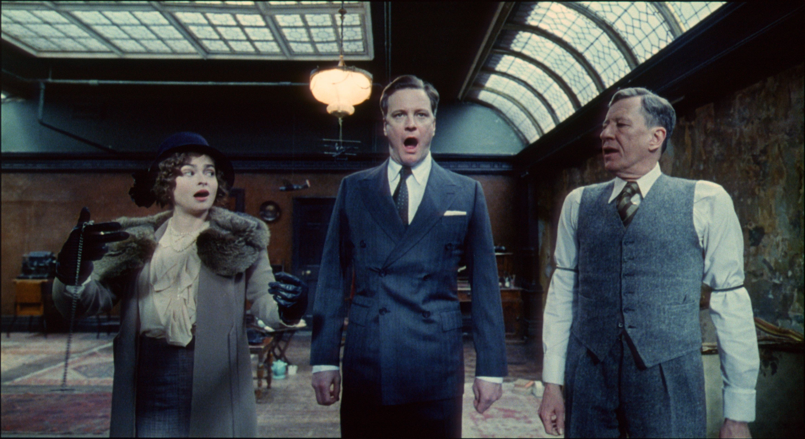
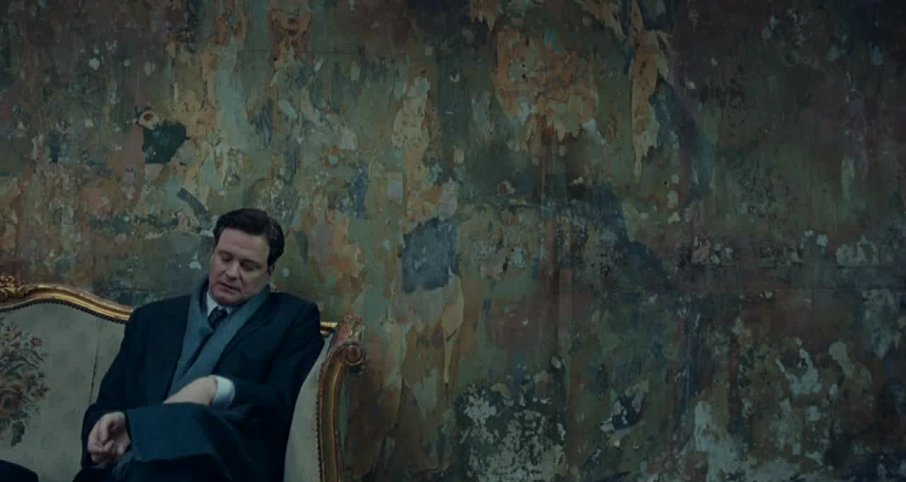

Гибких навыков ОЧЕНЬ много

Андрей Смирнов (@frontendweekend)



руководителей считают, что soft skills столь же или
более важны по сравнению с hard skills
руководителей считают крайне сложным найти сотрудника с необходимым уровнем развития soft skills

Пока роботы оптимизируют старые идеи, креативные сотрудники придумывают решения проблем будущего.
Ты можешь иметь великолепный продукт или потрясающий концепт, но какой в этом толк, если ты не можешь убедить его купить.
Пока в эпоху искусственного интеллекта проекты становятся сложнее и масштабнее, умение работать в команде становится как никогда важным.
Вчерашние решения не помогут решить
завтрашние проблемы.
Умение управлять своим временем сегодня будет служить вам всю оставшуюся карьеру.

Я не очень поддерживаю идею культа личности, которая развивается в современном IT. Надо смотреть на логику и саму идею, а не кто её поддерживает.
В своё время мне очень помогла организованность, потому что когда технических знаний было ещё мало, успевала все равно делать много задач, получалось освобождать время на обучение, без которого невозможно дальнейшее профессиональное развитие.
Открытость новому помогла мне бросить backend, пойти на первую frontend-конференцию и влиться в сообщество. Менять профессию всегда сложно, но терпение и адаптируемость помогли мне вырасти как специалисту и начать выступать. Для спикера важно адекватное восприятие критики, это помогает делать выступления лучше.
Я всегда хотел быть хорошим специалистом прежде всего, высокая должность меня не интересовала. А хороший специалист в нашей области не может без постоянной учёбы, тут одной практикой не набрать.
Научился продавать себя как специалиста и продвигать свои идеи. В итоге начал получать много предложений о работе, значительно повысил себе зарплату, смог договариваться о том, чтобы делать интересные вещи вместе с полезными. Стал больше путешествовать.
development_value = (gained_by_experience / 2
+ gained_by_development) / people_number
help_value = (fours / 2 + fives) / people_number
final_value = development_value * help_value

Андрей Смирнов (@frontendweekend)
